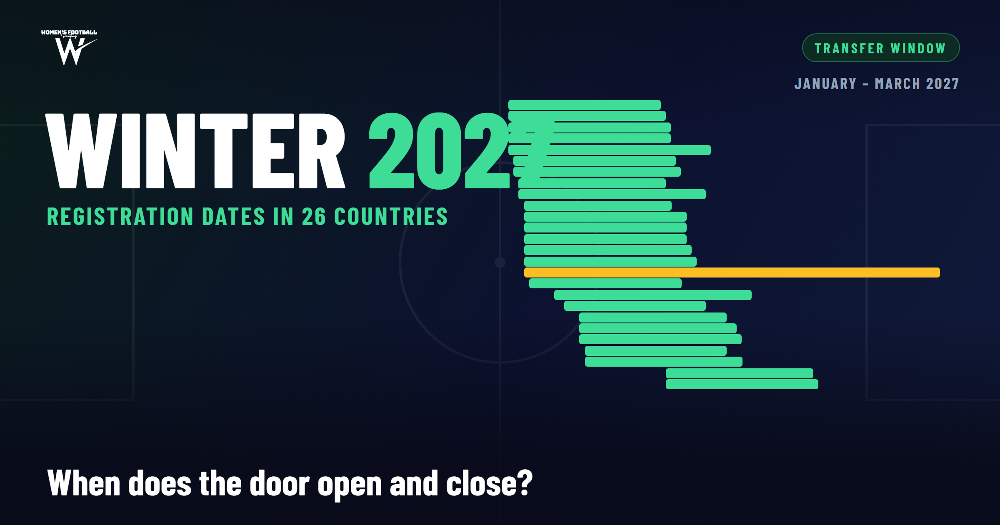

Winter Transfer Windows 2027: Registration Dates in 26 Countries
Germany and Denmark open on 1 January, England, France and Italy on 4 January. In most countries the window lasts a month; in Türkiye it lasts 82 days. Women's football's winter registration periods, country by country.

The winter window is quieter in women's football than in the men's game, but for every club planning its squad the calendar matters just as much. When does each country open, and when does it close? We put the 2027 winter registration periods of the 26 countries whose seasons run from August to May on a single calendar.
At the end we look at the calendar-year leagues too: Sweden, Norway, the USA and others. Their main window opens not in winter but just before the new season.
Calendar
The 2027 winter registration period in 26 countries, by opening date.
Each bar is one country's window: the left end is the opening, the right end the closing. The first week of January is crowded: 17 of the 26 countries open by 5 January.
Winter registration periods, 2027
| COUNTRY | OPENS | CLOSES | DAYS | LEAGUE |
|---|---|---|---|---|
| Nigeria | 1 Jan | 30 Jan | 30 | — |
| Morocco | 1 Jan | 31 Jan | 31 | — |
| Germany | 1 Jan | 1 Feb | 32 | Frauen-Bundesliga |
| Denmark | 1 Jan | 1 Feb | 32 | A-Liga |
| Mexico | 1 Jan | 9 Feb | 40 | Liga MX Femenil (Apertura) |
| Spain | 2 Jan | 2 Feb | 32 | Liga F |
| Belgium | 2 Jan | 3 Feb | 33 | — |
| Saudi Arabia | 3 Jan | 31 Jan | 29 | Saudi Women's Premier League |
| Austria | 3 Jan | 8 Feb | 37 | ÖFB Frauen-Bundesliga |
| Italy | 4 Jan | 1 Feb | 29 | Serie A Women |
| France | 4 Jan | 4 Feb | 32 | Première Ligue |
| Netherlands | 4 Jan | 4 Feb | 32 | Vrouwen Eredivisie |
| England | 4 Jan | 4 Feb | 32 | Women's Super League |
| Scotland | 4 Jan | 5 Feb | 33 | SWPL 1 |
| Portugal | 4 Jan | 6 Feb | 34 | Liga BPI |
| Türkiye | 4 Jan | 26 Mar | 82 | Kadın Futbol Süper Ligi |
| Japan | 5 Jan | 3 Feb | 30 | WE League |
| Croatia | 10 Jan | 17 Feb | 39 | — |
| Wales | 12 Jan | 8 Feb | 28 | Adran Premier |
| Serbia | 15 Jan | 12 Feb | 29 | — |
| Hungary | 15 Jan | 14 Feb | 31 | Női NB I |
| Switzerland | 15 Jan | 15 Feb | 32 | Women's Super League |
| Czechia | 16 Jan | 12 Feb | 28 | 1. liga žen |
| Slovenia | 16 Jan | 15 Feb | 31 | 1. ŽFL |
| Poland | 1 Feb | 1 Mar | 29 | — |
| Ukraine | 1 Feb | 2 Mar | 30 | — |
Source: FIFA association pages; for Türkiye, the Turkish FA.
Who opens when?
Early openers, late openers and one long exception.
The earliest are Germany, Denmark, Mexico, Morocco and Nigeria, on 1 January. The busiest day is 4 January, when England, France, Italy, the Netherlands, Portugal, Scotland and Türkiye all open. Central Europe comes a little later: Croatia on 10 January, Hungary, Serbia and Switzerland on 15 January, Czechia and Slovenia on 16 January. Poland and Ukraine wait until 1 February.
The lengths are surprisingly uniform: most windows last between 28 and 34 days, roughly a month. The one big exception is Türkiye. In the Turkish Women's Super League the window opens on 4 January and stays open until 26 March, 82 days. When the big European leagues close in early February, Türkiye still has seven weeks to go.
Calendar-year leagues
The 2027 dates are not out yet; last year's first window is a good guide.
For Sweden, Norway, Finland, Iceland, the USA, Canada, Brazil and the other calendar-year leagues, winter is the off-season. Their main window opens just before the new season. The 2027 dates are not out yet; the table below shows the first windows of 2026, and the order rarely changes much from year to year.
| COUNTRY | FIRST WINDOW IN 2026 | LEAGUE |
|---|---|---|
| Ireland | 1 Dec – 22 February 2026 | Women's Premier Division |
| Colombia | 29 Dec – 20 March 2026 | — |
| China | 1 Jan – 6 March 2026 | Chinese Women's Super League |
| South Korea | 12 Jan – 20 March 2026 | WK League |
| Brazil | 19 Jan – 17 March 2026 | — |
| USA | 20 Jan – 16 March 2026 | NWSL |
| Sweden | 29 Jan – 25 March 2026 | Damallsvenskan |
| Norway | 30 Jan – 31 March 2026 | Toppserien |
| Finland | 4 Feb – 31 March 2026 | Kansallinen Liiga |
| Iceland | 5 Feb – 29 April 2026 | Besta deild kvenna |
| Canada | 16 Feb – 24 April 2026 | Northern Super League |
| Argentina | 3 Mar – 27 April 2026 | — |
| South Africa | 9 Mar – 31 May 2026 | — |
The 2027 dates may differ as associations publish them.
Australia runs on its own calendar: the A-League Women window that is open now closes on 21 December, and the next one opens on 29 April.
Planning
The calendar is set. So who is free on those dates?
Whether a player can be signed without a transfer fee in the winter window depends on whether her contract ends before your country's window opens. A player whose contract ends in June enters her last six months in January, which opens the door to talks for the summer.
Contract Watch 2027 on the site does this calculation by country: pick yours and see, position by position, the graded players who will be free when the window opens.
Text: WFS Analysis Desk. Source: registration periods from FIFA's association pages, for Türkiye the Turkish FA (calendar data as of 13 November 2026). Associations may change dates later.
More files